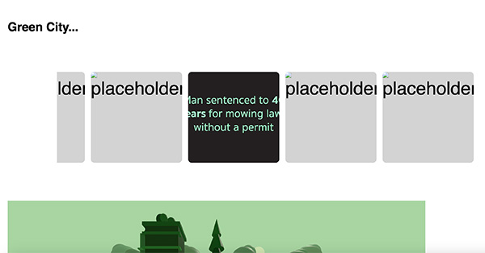
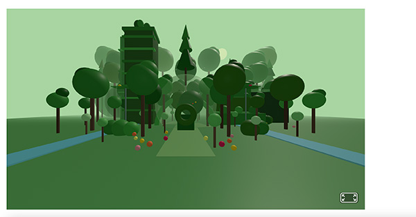
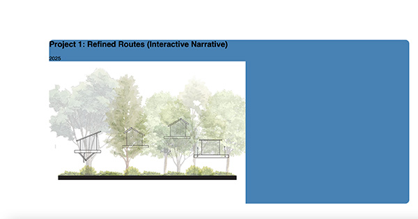

The usability testing went well; the users understood the general gist of my project, but they did have feedback on improvements I could work on. The feedback I received was mainly minor design choices I had, but overall, completely fixable.

Some feedback I got on the news outlet carousel was to possibly make it go slower or have it be less text-heavy so users have a better chance to read it. I completely agree. I think I am going to cut down on words and highlight the main points.

Another piece of feedback I got, and I noticed as well, was that people were struggling to figure out that the 3D city I made was interactive. Users suggested I make it clear that you could enter and navigate the city with arrow keys. I agree with this feedback because I noticed that users were scrolling past that key feature of my project, so I do plan on adding instructions to navigate the city.

Finally, something I was concerned about was whether my project was interactive enough and if text blocks explaining each illustration were too boring. Something classmates suggested was to incorporate labels that appeared when you hovered over the image to make it look more interesting.